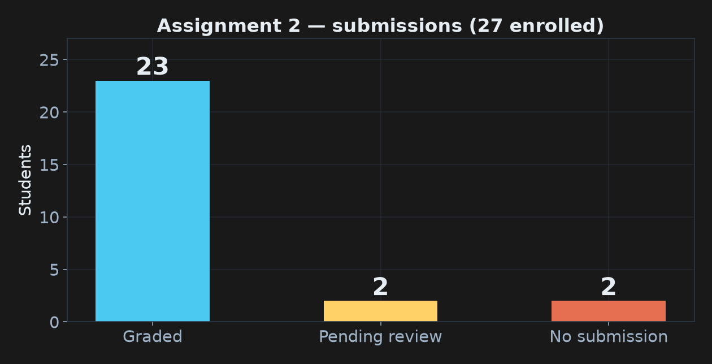
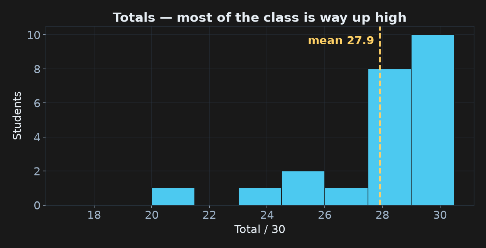
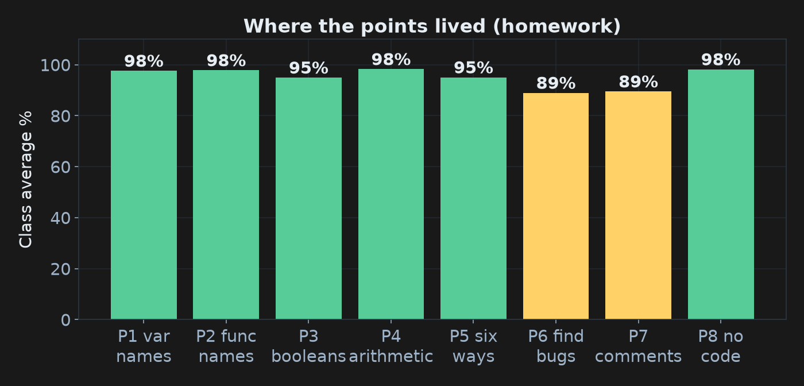
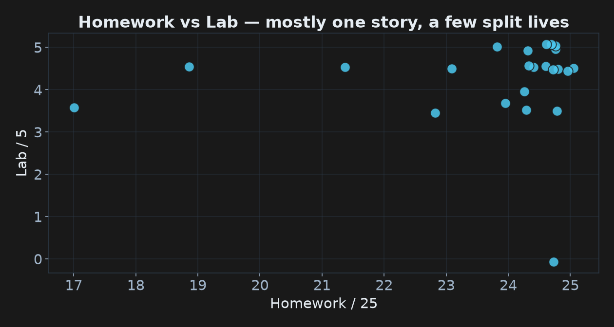
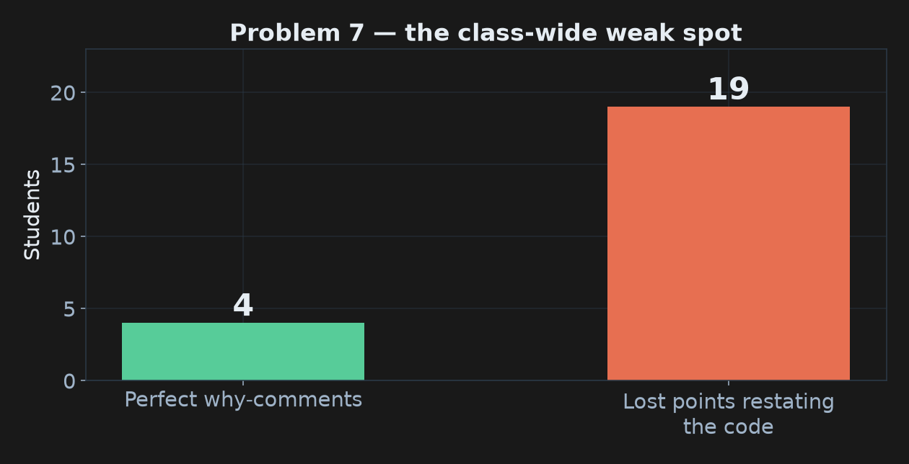

COMP 150-003 · Week 5 · All results anonymized — you are a random letter tonight
Same deal as A1: we do the data-science thing on ourselves.
By December you'll build charts like these with your own harness.

Two submissions are still under review — you know who you are, come talk to me. If you're one of the 2 who didn't submit: the door is still open tonight.

Mean ~27.9 / 30, median ~28.9. That's not a gift — the evidence standard got stricter this time. You earned this.

Wolf/goat/cabbage: nearly perfect — you can all think in algorithms. The dip is Problem 7: comments. That's tonight's craft lesson.

Most of you live in the top-right. The stragglers are almost all one story: cells that were never run — not concepts.
Every one of these is fixable in under a minute.
And one of them comes with a policy announcement.

Only 4 perfect scores on Problem 7 — the lowest of any problem. Let's fix that right now.
for n in numbers: # go through each number in the listbig_numbers.append(n) # add n to the listbig_numbers.append(n) # keep this one — it passed the cutoffreturn big_numbers # hand back only the survivors# this function finds big numbers
def find_big_numbers(numbers, cutoff):
big_numbers = [] # make an empty list
for n in numbers: # loop over the numbers
if n > cutoff: # check if n is bigger than cutoff
big_numbers.append(n) # add n to the list
return big_numbers # return the list# Return only the values above a cutoff, e.g. flagging orders over $100.
def find_big_numbers(numbers, cutoff):
big_numbers = [] # survivors collect here as we filter
for n in numbers: # examine every candidate exactly once
if n > cutoff: # strictly greater — ties do NOT pass
big_numbers.append(n) # keep it: this one made the cut
return big_numbers # hand the caller just the keepersstrictly greater comment has prevented a thousand real-world bugs.# squares = [i**2 for i in range(1, 11)] ← a perfect answer… commented outprint(squares) ← printing a stale value from the previous cellCheck your feedback on Sakai — if this applies to you, it says so explicitly.
1. first_name: valid3. age: valid9. _temp: validStudent and updateProfile invalid. They're legal — just unusual-looking.17 % 5 — "that's 17 percent of 5… so 0.85?"-7 // 2 — "7 // 2 is 3, so -7 // 2 is -3… right?"% has nothing to do with percent. It's the remainder: 17 = 3×5 + 2.// doesn't chop toward zero — it floors: always toward −∞.-7 / 2 = -3.5 → floor → -4. On the number line, -4 is below -3.5.+ 2 — or fixed the + 2 and left the counters swapped. And one fix passed the test anyway. That last one is tonight's best lesson.You are the CPU now. One column per variable, one row per step. No skipping, no vibes.
def count_evens_and_odds(numbers):
evens = 0
odds = 0
for n in numbers:
if n % 2 == 0:
odds = odds + 1 # bug 1: wrong counter
else:
evens = evens + 2 # bug 2: wrong counter AND +2
return evens, odds
print(count_evens_and_odds([1, 2, 3, 4, 5, 6])) # want (3, 3)| n | n % 2 == 0 ? | branch | evens | odds |
|---|---|---|---|---|
| — | — | start | 0 | 0 |
| 1 | False | else | 2 | 0 |
| 2 | True | if | 2 | 1 |
| 3 | False | else | 4 | 1 |
| 4 | True | if | 4 | 2 |
| 5 | False | else | 6 | 2 |
| 6 | True | if | 6 | 3 |
+2 but left the counters swapped — evens counts odds, odds counts evens. It printed (3, 3). Test passed. Full marks?| list | true evens | true odds | swapped code returns | caught? |
|---|---|---|---|---|
| [1, 2, 3, 4, 5, 6] | 3 | 3 | (3, 3) | no 😱 |
| [1, 3, 5, 2] | 1 | 3 | (3, 1) | YES |
squares = []
i = 1
while i <= 10:
squares.append(i * i)
i += 1| step | i | i <= 10 ? | squares |
|---|---|---|---|
| start | 1 | True | [] |
| 1 | 2 | True | [1] |
| 2 | 3 | True | [1, 4] |
| … | … | … | … |
| 10 | 11 | False → stop | [1, 4, …, 100] |
i = 1? Row zero of the table catches it instantly — there's nothing to write in the i column.17 % 5 was "17 percent of 5," ran it, and wrote: "seeing it now makes sense on how it got to 2." Full credit. Being wrong out loud is a superpower.# Initialize an accumulator list to collect values that meet the threshold — a comment that teaches the pattern, not the line.if, for, while, def, return ARE reserved words. The naming-rule slide says a name must not be one of them — good catch from a classmate who asked.More loops, more functions — and yes, trace tables will be required on one problem.
Details on Sakai this week. Tonight's lab continues where the misses left off.